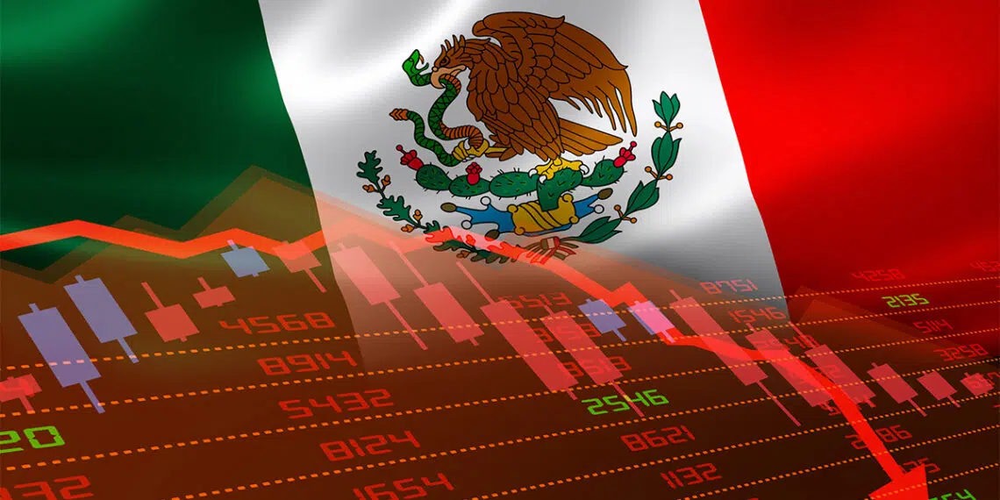

Todo el contenido de esta página tiene como objetivo INFORMAR
Las mejores noticias las encontras en CriptoNFTHoy
Noticia de las Principales Criptomonedas
Gate.io supera los 10 millones de usuarios y entra al top de los exchanges globales
El principal exchange de criptomonedas, Gate.io, anunció que su total de usuarios registrados había superado la marca de los 10 millones. Esto culmina un increíble 2021 para la compañía, donde Forbes la seleccionó como el mejor exchange del mundo. Las dos razones principales por las que Gate.io ha atraído a tantos usuarios son: su historial de seguridad y la gran cantidad de productos que ofrecen.
Estas criptomonedas del top han duplicado (o incluso más) su precio en un año
El mercado de criptomonedas está caracterizado por varias cosas. Pero una de ellas, y quizá la que más atraiga a entusiastas a este mundo, es la cantidad de monedas con aumentos de precio vertiginosos, muy altos, en poco tiempo. En el último año, hay una lista de 30 monedas pertenecientes al top 100 del mercado que no solo han tenido...
¿Es rentable minar bitcoin y criptomonedas en Argentina en 2022?
Minar criptomonedas como bitcoin (BTC) y ether (ETH) es una actividad que, en Argentina, tiene marcadas diferencias. La situación es muy distinta para quienes operan a nivel industrial y para quienes lo hacen desde sus hogares. Al final, si bien es cierto que la industria se mantiene y crece, la rentabilidad es altamente relativa. Para responder...
Noticia de Mejores Juegos NFT
Axie Infinity filtra detalles sobre Origin, la nueva versión del videojuego basado en NFT
Axie Infinity, el videojuego basado en NFT, se prepara para recibir pronto a Origin, el nombre con el que se ha presentado su nueva y mejorada versión. El día de ayer se publicó un nuevo comunicado en el blog oficial de Axie Infinity, que fue replicado en sus redes sociales. En él se detallan una serie de novedades que están cercanas a llegar al juego.
Axie Infinity frena aumento de tarifas en su marketplace por quejas de la comunidad
Sky Mavis, empresa detrás del popular videojuego Axie Infinity, ha decidido pausar el aumento a las tarifas de transacción en el mercado o Marketplace de Axie, que iban a pasar de 4,25% a 5,25% el próximo 7 de marzo. El freno a la nueva política del juego se puso debido a las múltiples quejas de la comunidad.
YouTube entrará en el mercado de NFT y juegos de metaversos
YouTube entrará de lleno en el mercado de los NFT (tokens no fungibles), los juegos inmersivos de metaversos y otros productos de la industria de las criptomonedas. Así lo dio a conocer la empresa el 10 de febrero en un comunicado sobre los nuevos productos, herramientas y características que lanzarán en 2022.
Noticia de Finanzas Digitales
¿Querés pagar con bitcoin en Argentina? Ya está disponible una tarjeta de débito prepagada
Los responsables de la billetera digital Belo anunciaron este lunes el lanzamiento en Argentina de las primeras 1.000 tarjetas de débito Belo Mastercard, para permitir pagos a partir de fondos disponibles en bitcoin y otras criptomonedas. La conversión a pesos argentinos se realiza de forma automática al realizar los pagos.
¿El Petro se ganó un lugar en la economía venezolana?
Desde el año 2017 la palabra «petro» es parte del imaginario colectivo venezolano y una pieza más de su sistema financiero. Para aquel entonces, el gobierno de Venezuela presentaba la criptomoneda nacional como la solución para la maltrecha economía del país que sufría por la devaluación del bolívar, la hiperinflación, las tensiones políticas-comerciales internas y las sanciones internacionales.
Adopción de bitcoin en El Salvador baja su calificación crediticia
Nuevamente, la adopción de bitcoin (BTC) como moneda de curso legal en El Salvador, enciende las alarmas de las entidades financieras internacionales. La calificadora de riesgos estadounidense, Fitch Ratings, bajó la calificación crediticia a largo plazo, conocida como Issuer Default Rating (IDR).
Noticia de Economía y Política

México cae en recesión: economía de Estado y bitcoin mantienen tendencias distintas
El año de la recuperación económica de México se estancó. La caída de 0,1% de la economía durante los últimos tres meses de 2021, respecto al periodo anterior, representa un revés que coloca al país entre los más rezagados del continente. De acuerdo con datos preliminares del Instituto Nacional de Estadística y Geografía (Inegi) difundidos este lunes, esta caída del Producto Interno Bruto se podría sumar al traspié que se registró en el tercer trimestre de 0,4%.
El dólar bitcoin resuena cada vez más fuerte en la maltrecha economía de Argentina
El peso argentino aceleró aún más su acentuado ritmo de depreciación. Los ciudadanos del país sudamericano vienen librando una fuerte batalla con la inestabilidad de la economía y el cepo cambiario que condiciona la compra de dólares norteamericanos. El gobierno lanzó un millonario paquete de medidas con la idea de enfrentar las consecuencias económicas frente a la pandemia por coronavirus, y en este contexto, el apetito por la dolarización en medio de la incertidumbre, el exceso de pesos y la fuerte caída de las tasas, provocó que se disparan los tipos de cambio implícitos del dólar; entre los cuales el «dólar bitcoin» resuena cada vez con mayor fuerza.
Con Jerome «BRRR» Powell se ratifica la impresión como política monetaria en EE. UU.
Una simple acción dice mucho más que miles de palabras. Ocurre en todas las instancias de la vida. Y la política es una de las que más deja entrever intenciones en cada movimiento que dan sus actores. La ratificación de Jerome Powell al frente de la Reserva Federal (Fed) de Estados Unidos es una de las más recientes de Joe Biden, actual presidente del país norteamericano.
Noticias más leídas
Ucrania se convierte en el primer Estado en organizar un airdrop de criptomonedas
Luego de recibir donaciones por un monto cercano a los USD 37 millones en Bitcoin y otras criptomonedas, el gobierno de Ucrania decidió recompensar a quienes se han solidarizado con su causa. Para tal fin, anunció una campaña de distribución gratuita de tokens, conocida en el sector de las criptomonedas como airdrop.
La guerra la financian los bancos y los gobiernos, no Bitcoin
Hace poco más de dos meses, casi 60 premios Nobel hicieron una petición para disminuir el gasto militar en todo el mundo. Al reducir solo 2%, se podría ahorrar USD 40.000 millones anuales, una cifra que podría contribuir a mitigar el hambre de 811 millones de personas en el mundo. El problema es que el financiamiento de la guerra es un negocio muy lucrativo para sectores de la sociedad que rara vez deben enfrentarse a las consecuencias de la destrucción.
¡Y qué hacemos si los gobiernos deciden prohibir bitcoin!
La empresa Casa, dedicada a desarrollar software de seguridad de Bitcoin, organizó hace unos días un panel de discusión. Allí se debatió sobre las posibilidades reales de que los países prohíban criptomonedas como bitcoin (BTC), y las opciones que tienen los ciudadanos ante un escenario semejante. En el debate, que se desarrolló en vivo en un space de Twitter, participó Jameson Lopp, CTO de la firma, junto a Ron Stoner, jefe de Seguridad de la misma. También estuvieron presentes el bitcoiner canadiense identificado en Twitter como @NVK; y Dave Bradley, fundador de Bitcoin Brains.
El otro frente de la guerra: hackers atacan al gobierno de Ucrania
Una guerra se está librando en las calles de Kiev y en otras partes de Ucrania, pero también se está luchando una guerra silenciosa aunque igual de dañina: la guerra cibernética. El pasado miércoles se reportaron varios ataques cibernéticos a instituciones del gobierno de Ucrania, así como a medios de comunicación y páginas web. Rusia tampoco estuvo libre de recibir ataques cibernéticos desde que inició la invasión a Ucrania.